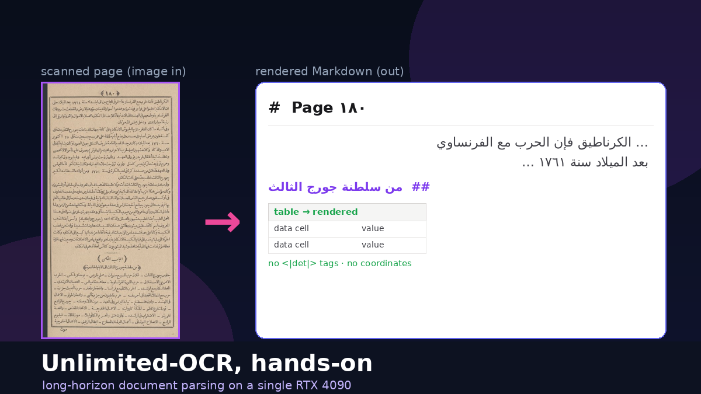
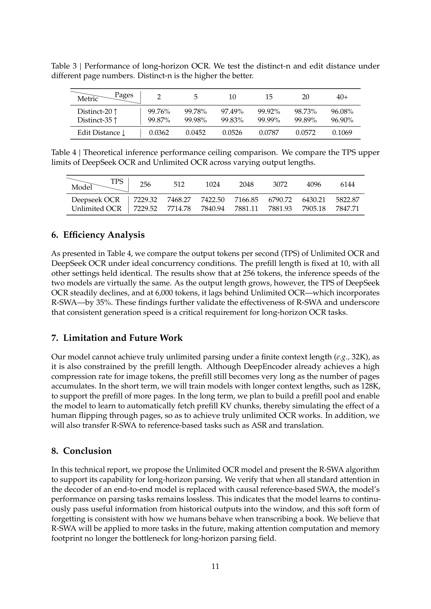
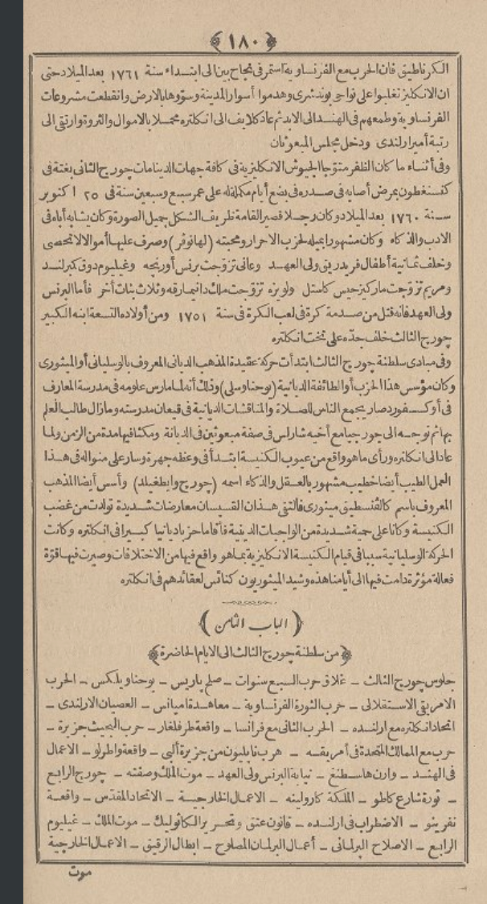
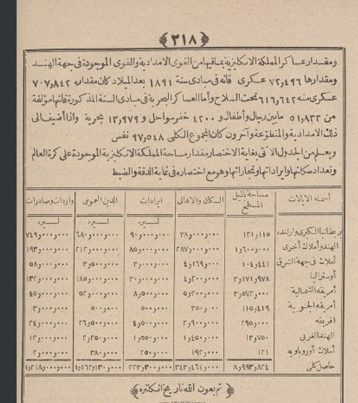
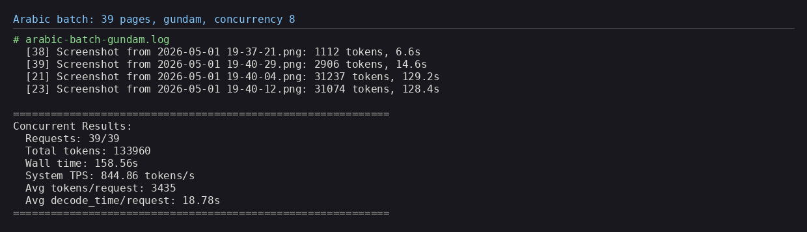
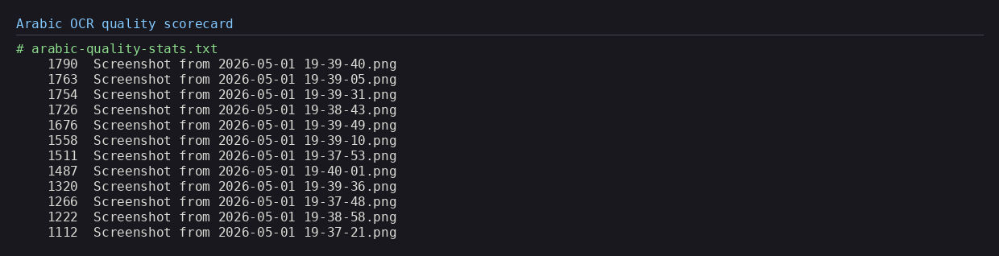
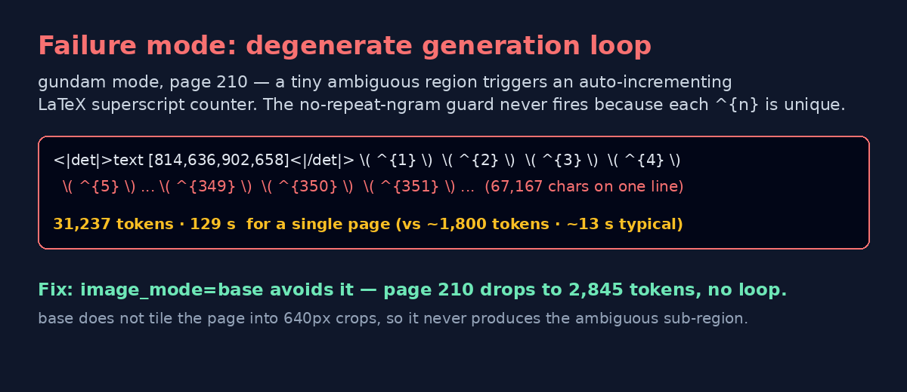
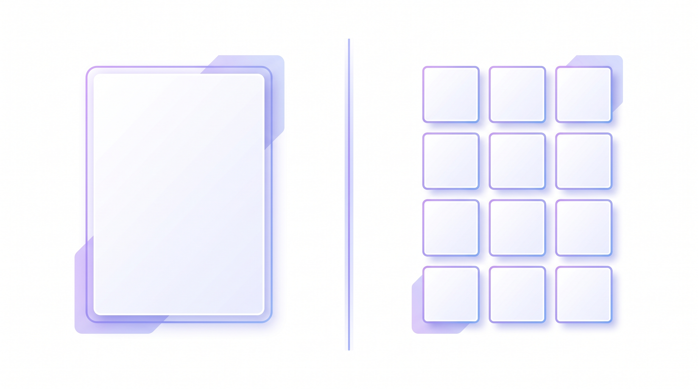
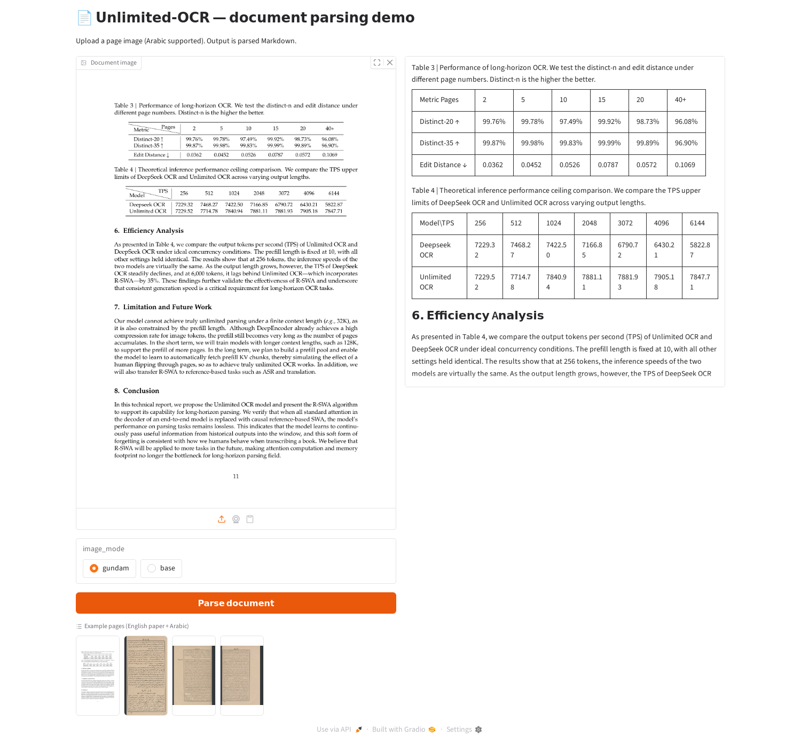

Unlimited-OCR is Baidu's long-horizon document-parsing model — a
VLM built on DeepSeek-OCR that turns a page image into structured output: layout
boxes, reading order, and HTML tables. I served it with SGLang on one 24 GB 4090 and ran it on
both clean English papers and 39 scanned 1890s Arabic pages. The split is the
story: near-perfect on modern English — including exact table extraction — and much harder on historical
Arabic.

Unlimited-OCR is a layout-and-structure engine that also reads text well when the text is clean. On the model's own academic paper — crisp modern English — it was excellent: near-perfect prose, correct section/heading detection, and two data tables reconstructed to HTML with every digit matching the source. That's the case to reach for it in production.
Point it at hard historical Arabic (1890s Naskh, tashkeel, faded paper) and the same
model still nails layout and reading order, but character-level text accuracy drops to roughly
60–80%, numbers become unreliable, 10/39 pages show stray CJK glyphs, and two
pages fall into a degenerate generation loop that ran to ~31,000 tokens. The loop has a one-flag
fix: image_mode=base (one page dropped 31,237 → 2,845 tokens).
Everything below was measured on a single RTX 4090, served with SGLang at ~845 tokens/s with eight
concurrent requests — install steps, full-page → Markdown comparisons for both English and Arabic, live table
extraction, and the failure mode (and fix) in detail.
Most OCR you've used returns a flat wall of text. Unlimited-OCR is part of a newer family —
seeded by DeepSeek-OCR — that treats a page as a document, not a string. Its output is
interleaved layout tags and content: each region comes wrapped in a
<|det|>TYPE [x1,y1,x2,y2]<|/det|> marker giving the region type
(header, title, text, table, page_number,
footer, image) and its bounding box, followed by the recognized text — or, for tables,
an HTML <table> grid.
Those tags are the model's raw output. You rarely want to keep them — a consumer strips the coordinates and region labels and renders a clean document. Throughout this article I show the rendered Markdown, not the tag soup. The transform is mechanical:
title → ## heading, text → paragraph, table → a rendered
table, and the running header / page-number tags are dropped. (A ~30-line det_to_markdown.py does
this; the same converter feeds the demo at the end.)
"Long-horizon" is the pitch: the model is tuned to parse dense, multi-region pages in one shot inside a
32k-token context, rather than being fed pre-cropped lines. Two knobs dominate behaviour. image_mode
is either gundam (tiles the page into 640 px crops — the single-image default) or
base (one 1024 px view, no crop). And a custom no-repeat-ngram logit processor
(ngram_size=35) is wired into the sampler to fight the repetition that long autoregressive OCR is
prone to — hold that thought, it matters later.
SGLang wheel (carrying the
custom logit processor), a single infer.py batch driver, and a README. The ~6 GB of weights
live on Hugging Face at baidu/Unlimited-OCR and download on first server start.
The serving path is an SGLang server exposing an OpenAI-compatible streaming endpoint; infer.py (or
my little demo) just POSTs images to /v1/chat/completions. Setup on the 4090 (Pop!_OS, CUDA 12.9)
was a clean uv virtualenv — the pinned wheel brings its own CUDA torch, so there's no separate torch
index to wrangle:
# 1. venv (asdf python 3.12) + model cache off the system drive
uv venv .venv --python "$(asdf which python)" && source .venv/bin/activate
export HF_HOME=/d/hugging_face_cache
# 2. install the pinned SGLang wheel (pulls torch 2.9.1+cu128) + helpers
uv pip install wheel/sglang-0.0.0.dev11416+g92e8bb79e-py3-none-any.whl
uv pip install kernels==0.11.7 pymupdf==1.27.2.2 requests
# 3. verify the GPU
python -c "import torch; print(torch.__version__, torch.cuda.is_available(), torch.cuda.get_device_name(0))"
# -> 2.9.1+cu128 True NVIDIA GeForce RTX 4090Then launch the server with the model's expected flags (these are load-bearing, not decorative):
python -m sglang.launch_server \
--model baidu/Unlimited-OCR --served-model-name Unlimited-OCR \
--attention-backend fa3 --page-size 1 --mem-fraction-static 0.8 \
--context-length 32768 --enable-custom-logit-processor \
--disable-overlap-schedule --skip-server-warmup \
--host 0.0.0.0 --port 10000
# wait for: "The server is fired up and ready to roll!"And run inference over a folder of images or a PDF (each PDF page is rasterized at 300 DPI and sent as one request):
# a directory of page images
python infer.py --image_dir ./arabic --output_dir ./out \
--concurrency 8 --image_mode gundam
# or a PDF (e.g. the paper itself)
python infer.py --pdf ./Unlimited-OCR.pdf --output_dir ./paper_out \
--concurrency 6 --image_mode base--attention-backend fa3 (FlashAttention-3) is usually flagged
as Hopper-oriented, but it initialized and served fine on the Ada 4090 — weights loaded, CUDA graphs
captured, requests flowed. The server holds ~20 GB of VRAM (model + ~11.8 GB KV cache).
--enable-custom-logit-processor is what activates the anti-repetition sampler — don't drop it.
Start with the easy, real-world case: crisp modern English. The most honest test document was the model's
own 14-page paper — so here is page 11, a page that mixes two data tables with three prose sections,
beside the rendered Markdown Unlimited-OCR produced from it (det tags stripped). The OCR ran in
base mode in ~5 s.

Table 3 | Performance of long-horizon OCR. We test the distinct-n and edit distance under different page numbers.
| Metric\Pages | 2 | 5 | 10 | 15 | 20 | 40+ |
|---|---|---|---|---|---|---|
| Distinct-20 ↑ | 99.76% | 99.78% | 97.49% | 99.92% | 98.73% | 96.08% |
| Distinct-35 ↑ | 99.87% | 99.98% | 99.83% | 99.99% | 99.89% | 96.90% |
| Edit Distance ↓ | 0.0362 | 0.0452 | 0.0526 | 0.0787 | 0.0572 | 0.1069 |
As presented in Table 4, we compare the output tokens per second (TPS) of Unlimited OCR and DeepSeek OCR under ideal concurrency conditions … at 6,000 tokens, it lags behind Unlimited OCR—which incorporates R-SWA—by 35%.
Our model cannot achieve truly unlimited parsing under a finite context length (e.g., 32K), as it is also constrained by the prefill length …
In this technical report, we propose the Unlimited OCR model and present the R-SWA algorithm to support its capability for long-horizon parsing …
— page 11 —
This is the result that recalibrates everything else in the article: on clean print the text recognition is
essentially flawless. The prose comes through verbatim (em-dashes, R-SWA,
(e.g., 32K) and all), the three numbered headings become ## Markdown headings, and the
two tables render with the numbers intact. Whatever struggles we see later on Arabic are about the input,
not a weak model.
Tables are where structured OCR earns its name. The model emits each table as an HTML <table>,
which renders straight into Markdown. Below are the actual reconstructed tables from page 11 — shown as
rendered Markdown, checked cell-by-cell against the source image:
| Metric\Pages | 2 | 5 | 10 | 15 | 20 | 40+ |
|---|---|---|---|---|---|---|
| Distinct-20 ↑ | 99.76% | 99.78% | 97.49% | 99.92% | 98.73% | 96.08% |
| Distinct-35 ↑ | 99.87% | 99.98% | 99.83% | 99.99% | 99.89% | 96.90% |
| Edit Distance ↓ | 0.0362 | 0.0452 | 0.0526 | 0.0787 | 0.0572 | 0.1069 |
| Model\TPS | 256 | 512 | 1024 | 2048 | 3072 | 4096 | 6144 |
|---|---|---|---|---|---|---|---|
| Deepseek OCR | 7229.32 | 7468.27 | 7422.50 | 7166.85 | 6790.72 | 6430.21 | 5822.87 |
| Unlimited OCR | 7229.52 | 7714.78 | 7840.94 | 7881.11 | 7881.93 | 7905.18 | 7847.71 |
No cell drift, no transposed digits, header row preserved. For digitizing reports, statements or papers, this is genuinely production-grade — and it stands in sharp contrast to the Arabic tables in the next sections, where the grid survives but the numeric cells do not.
Now the stress test. These 39 images are screenshots of a scanned, late-19th-century Arabic history book (visible page numbers ١٨٠–٢١٨). About as unfriendly as OCR input gets: Naskh metal type on yellowed paper, partial tashkeel (vowel diacritics), tight leading, footnote catchwords, and dense statistical tables of Arabic-Indic numerals.


I ran all 39 through infer.py in gundam mode at concurrency 8, then re-ran the problem
pages in base. There's no ground-truth transcription, so the Arabic text-accuracy figures are a
reading-based estimate by an Arabic reader, not a measured CER/WER — the structural and token metrics, by
contrast, are exact.

The good news is that the headline feature is script-robust. Across the 39 pages the model emitted 950 layout regions (~24 per page) and segmented the furniture cleanly: 33 headers, 12 page-numbers, 13 footers and 889 body blocks, plus table regions. Reading order came out right-to-left, top-to-bottom, with the running header and bottom catchword correctly separated. Here is page ١٨٠ rendered to Markdown (det tags stripped, RTL preserved):
الکرناطيق فاناحربمع الفرنساو يمتصرفياج بنا ابنداه سنة ١٦٦١ بعدالملادحى
ان الالكتيز تغلوا على فونشرى وهمدوا أسوارالمدينه وسوها بالدرض واتقطعت مشروعات الفرنساو …
وفأنتاء ما كانت الفقرمتؤيا الجيوش الالكيزة في كافة جهاات … جويح الثالث … في ٢٥ اكتوبر ١٧٦٠ …
— ١٨٠ —
Read it as an Arabic speaker and the structure and gist are right — the running header, the body flow, the date ١٧٦٠ — but words like فاناحربمع (should be فإن الحرب مع) show the character-level errors this historical type produces. That's the honest split: layout right, fine text shaky.
If your goal is to digitize structure — make a scanned archive searchable, split pages into regions, find every table — Unlimited-OCR earns its keep even on bad scans where individual characters are wrong. The layout layer degraded gracefully; the text layer did not.
Flip to the content of those boxes and it's more sober. On the cleaner prose lines the subject matter survives — George III, the French Revolution, Paris, the cotton trade — and Arabic-transliterated proper nouns are often recovered. But at the character level this historical typeface with its diacritics yields frequent letter/dot errors, broken ligatures and noisy tashkeel. Honest estimate: ~60–80% word accuracy on the good pages, lower on faded text — fine for search and gist, not for republication without a human pass.
Long Arabic-Indic numerals are the worst category. In the table cells they collapse into runs of repeated digits — the same numeric ambiguity that, on the English paper, the model handled perfectly. Here it's the seed of the runaway in the next section. Treat any digit in the Arabic output as unverified.
On 10 of 39 pages the output contained stray Chinese/Japanese glyphs — 年 月 日,
薄荷 ("mint"), 侧面, 奨. The tell of a CJK-heavy base model meeting an
ambiguous Arabic shape and decoding a visually-near token from the wrong script. No inference-time cure short of
fine-tuning; a one-line CJK strip is a cheap post-filter for an Arabic-only corpus.

| Metric | Clean English (paper, 14 pp) | Historical Arabic (39 pp) |
|---|---|---|
| Text accuracy (reading estimate) | near-perfect | ~60–80% (worse on faded) |
| Tables recovered cleanly | 3 / 3 | structure yes, cells no |
| Runaway loops | 0 | 2 / 39 |
| CJK hallucinations | 0 | 10 / 39 |
| Tokens / page | ~958 avg | median 1,865 (max 31,237) |
Two of the 39 Arabic pages took ~129 seconds and produced ~31,000 tokens each — vs the ~13 s and ~1,800 tokens typical — almost touching the 32k context ceiling. They weren't slow because they were dense. They were stuck in a loop.
On page ٢١٠ — a pure prose page, not even a table — one detected region degenerated into an
auto-incrementing LaTeX superscript counter: \( ^{1} \) \( ^{2} \) \( ^{3} \) …
all the way to \( ^{351} \), a single line of 67,167 characters. The other runaway
fell into an Arabic-Indic digit loop, ٢٥٢٥٢٥….
^{1}, ^{2}, ^{3} chunk is unique
because the counter increments. No n-gram ever repeats, so the guard never fires. It's a counting loop, not a
verbatim-repetition loop, and it walks straight to the context limit.

image_mode=base| Page | gundam | base | Outcome |
|---|---|---|---|
| ٢١٠ (prose) | 31,237 tok · 129 s | 2,845 tok · 10 s | loop eliminated |
| digit-loop page | 31,074 tok · 128 s | 7,950 tok · 25 s | much reduced |
| ٢١٨ (table) | 2,906 tok | 984 tok | more contained |
The fix above is mechanical. gundam tiles the page into 640 px crops; base sees the
whole page at 1024 px. One of gundam's tiles produced the tiny ambiguous sub-region that seeded
the loop — base never creates it.

base reads the whole page as one view; gundam tiles it into 640 px crops for fine detail — at the cost of occasionally seeding a runaway
Practical guidance from this run: for clean modern documents either mode is fine and base is fast and
safe; for messy historical batches, prefer base and add a guard regardless — cap
max_tokens per request, or post-filter any page whose longest output line exceeds a few thousand
characters and re-run it. The trade-off is that base can lose fine detail on very dense small text,
but a complete, sane page beats a perfect-then-runaway one.
The model's headline trick is reading a long sequence of pages while keeping a moving memory window (the paper calls it R-SWA). It's why a 14-page PDF parses in one pipeline — and also why a finite 32k context is the hard ceiling a runaway slams into.
The repo ships no UI, so I wrote a ~90-line Gradio front-end (demo_app.py) that talks to the same
SGLang endpoint and pipes the result through the same det_to_markdown.py converter: upload a page,
pick gundam/base, and watch the rendered Markdown stream in — headings,
paragraphs and tables, not raw tags.

Unlimited-OCR is a strong structured-OCR model with a clear comfort zone. On clean, modern documents it's genuinely production-grade: near-perfect text, correct section structure, and exact table extraction — at ~845 tokens/s on a single 24 GB card. If you're digitizing reports, papers or statements, reach for it.
On hard historical material — and especially non-Latin scripts like 1890s Arabic — recalibrate. You still get
excellent layout (segmentation, reading order, table scaffolds, searchable gist), but budget a human
correction pass, scrub the CJK glyphs and numbers, run in image_mode=base with a token cap to dodge
the runaway. The model is strong; the skill is knowing which half of it to lean on for your documents.
python infer.py --image_dir ./your_docs --output_dir ./out --concurrency 8 --image_mode base. Full
onboarding notes (install, config, issues, the complete scorecard) live alongside the repo.
image_mode ∈ {gundam, base} · 32k context · no-repeat-ngram sampler · illustrations generated with Nano Banana Pro
The dividing line
Across the whole paper (14 pages), three pages contained tables and all three were recovered cleanly, with no runaways and no hallucinations. The model's table machinery is solid; what breaks it is ambiguous input — faded scans and unfamiliar scripts — not table structure per se.